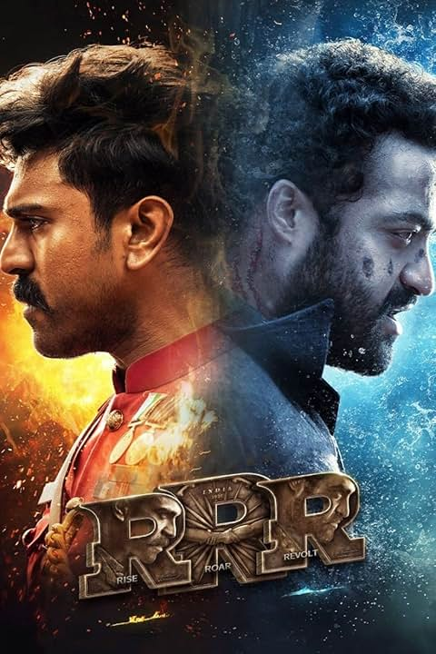

I absolutely love Biryani because of its rich flavors and delicious blend of spices. The combination of tender meat, aromatic rice, and mouth-watering masala makes it an unforgettable dish. It’s a perfect mix of tradition, taste, and comfort food!
One of my favorite movies is RRR. Directed by S. S. Rajamouli, it is an epic action drama that showcases the story of two revolutionaries fighting against British rule in India. The film is packed with intense action sequences, powerful storytelling, and outstanding performances. I especially admire the performance of N. T. Rama Rao Jr., who plays Komaram Bheem with great intensity and emotion.
If I had the chance to recast the main roles in RRR, these are some actors I would consider. They all have unique styles and could bring different energy to the characters.
| Actor Name | Reason for Selection | Age |
|---|---|---|
| Hrithik Roshan | His action sequences and physical fitness make him a strong candidate. | 50 |
| Rajinikanth | His charisma and screen presence would add a legendary feel to the role. | 73 |
| Priyanka Chopra | As a female lead, she would bring a fresh and dynamic take on the role. | 41 |
| Tom Hardy | His intense acting and powerful screen presence would make the role even more gripping. | 46 |
Want to know more about my favorite movie? Click here to read about RRR.